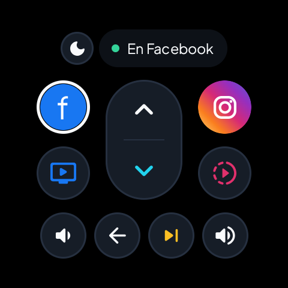
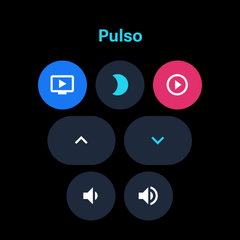

Controla Facebook Lite e Instagram desde tu reloj
Pasa videos, abre los Reels, sube el volumen o apaga la pantalla del teléfono sin sacarlo del bolsillo. Pulso convierte tu reloj con Wear OS en un control remoto.
Versión 1.0.1 · Necesitas las dos apps: una en el teléfono y otra en el reloj. Todas las versiones


La app y su widget en un Galaxy Watch
Qué puedes hacer
Todo desde la muñeca, con el teléfono guardado.
Pasar publicaciones y videos
Siguiente y anterior con un toque, deslizando en la pantalla o girando el bisel.
Ir directo a los videos
Abre la sección de video de Facebook Lite o los Reels de Instagram.
Volumen y omitir anuncio
Sube o baja el volumen del teléfono y salta un anuncio cuando aparece el botón.
Pantalla negra
Apaga la imagen del teléfono para ahorrar batería y bloquear los toques sobre el video, que sigue sonando. Los gestos de Android desde los bordes siguen activos.
Widget en el reloj
Desliza desde la esfera y usa los botones rápidos sin abrir la app.
Privado
Sin cuentas, sin anuncios y sin servidores: el reloj solo habla con tu teléfono.
Qué necesitas
Revisa esto antes de empezar.
- Un teléfono Android 8 o más reciente con Facebook Lite, Instagram o ambas instaladas. Pulso funciona con Facebook Lite, no con la app normal de Facebook.
- Un reloj con Wear OS ya vinculado a ese teléfono, por ejemplo con Galaxy Wearable o la app de Pixel Watch. Probado en Galaxy Watch8; debería funcionar en relojes con Wear OS 3 o posterior.
- El reloj y el teléfono en la misma red Wi-Fi, solo durante la instalación en el reloj.
- Unos 15 minutos. La parte del teléfono es sencilla. La del reloj tiene más pasos porque los relojes no permiten instalar archivos directamente.
Instalación paso a paso
Primero el teléfono y después el reloj. Los nombres de los menús pueden cambiar un poco según la marca.
Parte 1 · En el teléfono
- Descarga la app del teléfono
Desde el teléfono, abre esta página y toca App para el teléfono. Se descargará el archivo
pulso-telefono.apk. - Ábrela y permite la instalación
Toca la descarga terminada. Si Android dice que no puede instalar apps de esta fuente, toca Ajustes, activa Permitir de esta fuente, vuelve y toca Instalar.
Si Google Play Protect muestra una advertencia, toca Más detalles → Instalar de todas formas. El aviso aparece porque la app no viene de Play Store, no porque se haya detectado algo dañino.
- Abre Pulso en el teléfono
Verás si el control está activado y si encuentra tu reloj. Toca Activar Pulso en Accesibilidad.
- Activa el servicio de accesibilidad
En Accesibilidad → Aplicaciones instaladas, toca Pulso: control desde el reloj, actívalo y acepta. Este permiso es lo que deja a Pulso tocar y desplazar la pantalla por ti. Más abajo se explica qué hace y qué no hace.
¿La opción aparece en gris o dice "Configuración restringida"? En Android 13 o más reciente pasa con apps instaladas fuera de Play Store. Ve a Ajustes → Aplicaciones → Pulso, toca los ⋮ tres puntos de arriba a la derecha y elige Permitir configuración restringida. Después vuelve a este paso. - Comprueba que todo está bien
De vuelta en Pulso deberías ver ✓ Control activado. También aparecerá un pequeño botón con una luna en el borde de la pantalla: es la pantalla negra, y puedes moverlo arrastrándolo.
Parte 2 · En el reloj
Los relojes no tienen navegador ni gestor de archivos, así que la app se instala desde el teléfono o desde una computadora, por la red Wi-Fi. Esto se hace una sola vez.
- Activa el modo desarrollador del reloj
En el reloj ve a Ajustes → Acerca del reloj → Software y toca Versión de software 5 a 7 veces, hasta que diga que el modo desarrollador está activado. En otros relojes se llama Número de compilación y está en Ajustes → Sistema → Acerca de.
- Activa la depuración inalámbrica
En Ajustes → Opciones de desarrollador, activa Depuración ADB y luego Depuración inalámbrica (o Depurar por Wi-Fi). Anota la dirección IP y el puerto que aparecen, por ejemplo
192.168.1.50:5555. - Instala la app del reloj, eligiendo un método
Usa una app instaladora para relojes, gratuita en Google Play, como Wear Installer 2 o Bugjaeger. Son apps de terceros, sin relación con Pulso.
- En el teléfono, descarga
pulso-reloj.apk. - Abre la app instaladora y escribe la dirección IP y el puerto del reloj.
- Si te pide un código de vinculación, en el reloj toca Depuración inalámbrica → Vincular dispositivo nuevo e ingresa el código y el puerto que muestra.
- Acepta el aviso ¿Permitir depuración? que aparece en el reloj.
- Elige el archivo
pulso-reloj.apke instálalo. Tarda menos de un minuto.
Necesitas las herramientas de plataforma de Android, gratuitas y oficiales de Google. Descomprímelas, abre una terminal en esa carpeta y descarga
pulso-reloj.apken la misma carpeta.- En el reloj, toca Depuración inalámbrica → Vincular dispositivo nuevo. Usa la IP, el puerto y el código que aparecen:
adb pair IP:PUERTO-DE-VINCULACIÓN - Conéctate con la IP y el puerto principales de la pantalla de depuración inalámbrica:
adb connect IP:PUERTO - Instala la app:
Debe responderadb install pulso-reloj.apkSuccess.
- En el teléfono, descarga
- Apaga la depuración
Cuando termines, desactiva Depuración ADB en el reloj. Así ahorras batería y nadie más puede conectarse a él.
Parte 3 · A usarlo
- Abre Pulso en el reloj
Arriba verás el estado. "Teléfono listo" o "En Facebook / En Instagram" indica que todo funciona.
- Toca un botón
Los botones de colores abren Facebook Lite o Instagram, y los de abajo de cada uno van directo a los videos. Usa las flechas, desliza o gira el bisel para pasar publicaciones.
- Agrega el widget (opcional)
Mantén presionada la esfera del reloj o desliza hacia la izquierda hasta el final, toca + Agregar y elige Pulso: control rápido.
Problemas frecuentes
Toca una pregunta para ver la respuesta.
El reloj dice "El teléfono no responde"
Revisa que la app de Pulso esté instalada en el teléfono, que el reloj esté conectado al teléfono (por ejemplo, que recibas notificaciones) y que tengas las dos apps de la misma versión de esta página.
El reloj dice "Activa Pulso en Accesibilidad del teléfono"
El servicio se apagó, algo que algunos teléfonos hacen tras actualizar o para ahorrar batería. Repite el paso 4 de la Parte 1. Si se apaga seguido, en Ajustes → Batería pon Pulso como app sin restricciones.
"Configuración restringida" o la opción de accesibilidad está en gris
Ve a Ajustes → Aplicaciones → Pulso → ⋮ → Permitir configuración restringida y vuelve a intentarlo. Lo explicamos en el paso 4 de la Parte 1.
"No se instaló la app" o "el paquete entra en conflicto"
Ya tienes otra versión de Pulso firmada de forma distinta, por ejemplo una que compilaste tú. Desinstálala primero en ese dispositivo y vuelve a instalar la de esta página. Las dos apps, teléfono y reloj, deben venir del mismo lugar, o no podrán comunicarse.
Los botones de video no abren la sección correcta
Facebook Lite e Instagram cambian su diseño con frecuencia y eso puede afectar estos atajos. Actualiza Pulso cuando haya una versión nueva. Si sigue fallando, avísanos aquí.
¿Cómo quito la pantalla negra?
Toca la luna en el reloj o, en el teléfono, mantén el dedo quieto sobre la pantalla 3 segundos hasta que se llene el anillo. Si el teléfono está tapado (bolsillo o bolso), se ignoran los toques a propósito.
La pantalla negra no se desbloquea
Si al mantener el dedo no aparece el anillo, sal con el botón de encendido. La versión 1.0.0 podía fallar así: instala la 1.0.1 encima, sin desinstalar. Si el teléfono sigue sin responder bien a los toques automáticos de Pulso, reinícialo.
¿Cómo actualizo Pulso?
Descarga la versión nueva e instálala encima, sin desinstalar, primero en el teléfono y luego en el reloj. Después abre Pulso en el teléfono y comprueba que siga diciendo ✓ Control activado.
¿Cómo desinstalo Pulso?
En el teléfono, desinstálalo como cualquier app. En el reloj, mantén presionado el ícono de Pulso en la lista de apps y elige Desinstalar.
Privacidad y permisos
Qué hace Pulso con tu teléfono, en palabras simples.
No recopila datos
No hay cuentas, analíticas ni anuncios. Pulso no se conecta a ningún servidor. Las órdenes viajan solo entre tu reloj y tu teléfono, por la conexión de Wear OS.
Accesibilidad
La usa para tocar y desplazar la pantalla por ti y saber qué app está abierta. Busca solo los botones que necesita (pestañas de video, omitir anuncio) y no guarda ni envía lo que hay en pantalla.
Lo que nunca hace
No da "me gusta", no comenta, no publica, no sigue cuentas y no lee tus mensajes ni tus contraseñas.
Otros permisos
Vibración para confirmar los toques. Superposición y sensor de proximidad para la pantalla negra. Mantener la pantalla activa al pasar videos. Control del volumen multimedia.
¿Quieres comprobarlo? El código fuente completo es público.
Verificar las descargas
Opcional, para usuarios avanzados. Descarga Pulso solo desde esta página o desde GitHub. Puedes comparar la huella SHA-256 de la versión 1.0.1:
| pulso-telefono.apk | 33045f4b00684996a2453a8b78c8789b7093f509c4c1a82b87c5f07181a41de7 |
| pulso-reloj.apk | 108c8c1b8f94b8e7f073b00511b5569a090ce963fd5784737fbf0c47cf140eff |
Avisos legales
Proyecto independiente y no oficial
Pulso es un proyecto personal de código abierto. No está afiliado, patrocinado, respaldado ni aprobado por Meta Platforms, Inc., Google LLC ni Samsung Electronics. Facebook, Facebook Lite e Instagram son marcas de Meta Platforms, Inc. Android y Wear OS son marcas de Google LLC. Galaxy Watch es una marca de Samsung Electronics. Estos nombres se mencionan solo para indicar con qué funciona Pulso.
Sin garantía
Pulso se distribuye gratis bajo la licencia MIT, "tal cual", sin garantías de ningún tipo, expresas o implícitas, incluidas las de funcionamiento, comerciabilidad o idoneidad para un propósito particular. Los autores no son responsables de ningún daño, pérdida de datos, fallo del dispositivo, cargo de datos móviles, restricción o suspensión de cuentas, ni de cualquier otro perjuicio derivado de instalar o usar la app, en la medida que lo permita la ley aplicable.
Uso responsable y términos de terceros
Pulso automatiza toques y desplazamientos en apps de terceros mediante el servicio de accesibilidad de Android. Los términos de servicio de esas plataformas pueden limitar el uso de herramientas automatizadas o de terceros, incluida la función de omitir anuncios. Eres responsable de revisar y cumplir esos términos, y de cómo usas Pulso. Úsalo solo con tus propias cuentas y dispositivos. No lo uses mientras conduces ni en situaciones en las que distraerte sea peligroso.
Instalación fuera de las tiendas oficiales
Estas apps no se distribuyen por Google Play. Instalar apps de fuera de las tiendas oficiales y activar el modo desarrollador tiene riesgos de seguridad: hazlo solo con archivos de esta página y desactiva la depuración al terminar. Estas versiones están firmadas con una llave de desarrollo del proyecto, no por Google.
Licencia y código fuente
El código está disponible en github.com/SANMH/Pulso bajo la licencia MIT. Puedes usarlo, copiarlo, modificarlo y distribuirlo, siempre que conserves el aviso de copyright y de licencia. Copyright © 2026 SANMH.